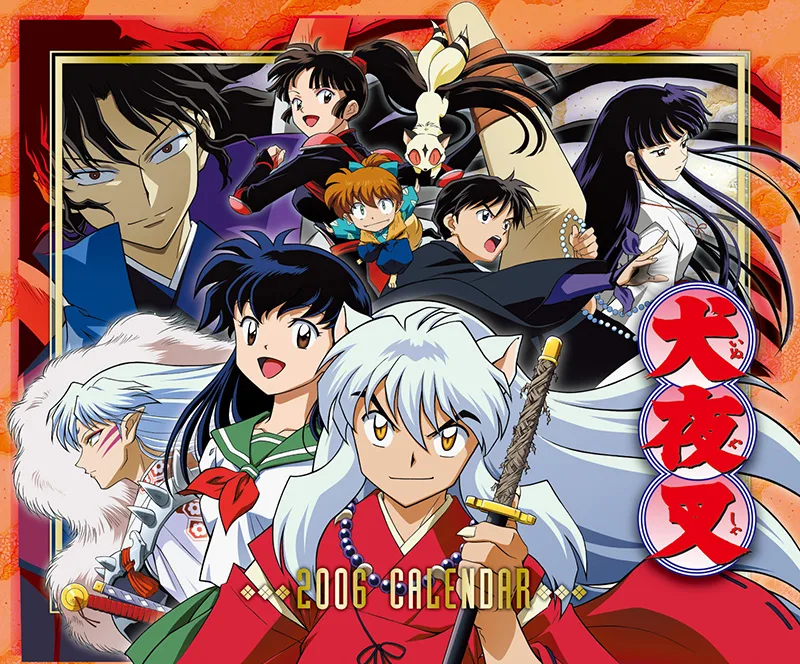

犬夜叉
故事簡介:
就讀國中三年級的日暮籬是一名家住在神社的少女。
她15歲生日那天被拖入神社的枯井中，來到五百年前的日本戰國時代與已被封印的半妖少年犬夜叉相遇。
日暮籬在一次危機中喚醒犬夜叉，又不小心將四魂之玉用箭射碎，散至各地。為了收集四魂之玉碎片
，犬夜叉與日暮籬踏上旅途，和後來相遇的小妖狐七寶、法師彌勒和驅魔師珊瑚一同搜集四魂之玉，
並向著打倒同樣是收集四魂之玉的妖怪—奈落為目標出發。
角色介紹
- 犬夜叉
- 為狗妖和人類所生下的半妖，平時具有妖力，武器為父親的遺物鐵碎牙。具一頭銀髮，一到朔月便會變成人類模樣。
- 脾氣暴躁，沉不住氣，阿籬時常用他身上的念珠壓制他。
- 與桔梗互相喜歡，卻因奈落作祟導致兩人決裂，她復活後最終與犬夜叉和好。
- 在與阿籬一行人尋找四魂之玉碎片時對她產生情愫。兩人最後在戰國時代一起生活。
- 日暮籬
- 在15歲生日時被拖入神社的枯井中，穿越到戰國時代，與犬夜叉一行人之後踏上尋找四魂之玉的旅程。
- 是巫女桔梗的轉世，也具有強大的靈力，能用箭矢射出靈力之箭。
- 漸漸喜歡上犬夜叉，有時因犬夜叉還喜歡桔梗而吃醋，但後來放下執念。
- 時常在現代與戰國透過枯井穿梭，會帶一些現代品去戰國用，令大家感到好奇。
- 高中畢業後，決定回到戰國時代與犬夜叉一起生活，並成為了巫女。
- 彌勒
- 法師，有些好色，武器為錫杖以及符咒。右手上有奈洛留下的詛咒風穴，若不解開最後將會被其反噬。

- 最後成功殺掉奈洛，解開詛咒，與珊瑚結婚。
- 珊瑚
- 出身驅魔師家族，有許多除妖的藥物，武器為飛來骨及武士刀。
- 由於奈洛的設計父親、同伴及弟弟皆被殺害，而奈洛之後操控她弟弟當傀儡。
- 為了報仇及拯救弟弟而成為犬夜叉他們的同伴。
- 在一路上收集四魂之玉的途中和彌勒之間互相發展出了情愫，
- 為了壓制住他的花心費了很多苦工，最後與彌勒結婚
- 七寶
- 小妖狐，父親被殺自己被犬夜叉及阿籬所救，之後便跟著他們。
- 時常與犬夜叉鬥嘴，然後被痛扁。能使用障眼法術以及狐火。
- 在奈落被打敗之後到處修行，準備妖術升級考試。
- 奈洛
- 本劇終極敵人，為劇中眾人之宿敵。半妖，前身是一個無惡不作的人類強盜─鬼蜘蛛。
- 知曉桔梗與犬夜叉相愛時，使計令桔梗與犬夜叉反目成仇，再藉此取得完全污染的四魂之玉。
- 他可選擇任何時候變回人類並重組身體。取得接近原形的四魂之玉後，增加了得以分割身體一部
- 份為分身的能力。由於將心臟分離身體的關係，不管身體如何被粉碎亦能活下來，體內充滿了瘴氣。
- 在最後的戰鬥中終於想起，自己真正的願望只是想要得到桔梗的心而已。被阿籬以破魔之箭
- 射穿四魂之玉而滅亡。在死後靈魂被困在四魂之玉中，等到四魂之玉完全消失後才正式消滅。
- 桔梗
- 年齡18歲（得年）。靈力強大，是守護、淨化四魂之玉的巫女，也是阿籬的前世。犬夜叉的初戀情人。
- 但是他們兩人都因奈落陰謀產生誤會，最終兩人相互追殺，愛著犬夜叉的桔梗不忍心殺掉犬夜叉只射出
- 封印之箭把他封印在時代樹上。桔梗也因重傷過世。
- 五十年後鬼婆裡陶使用法術妖術把桔梗的墓土跟骨灰結合，恢復她的身軀，再抓取死魂使她能夠活動。
- 復活後與犬夜叉解開誤會，雖然愛意還在卻已不能在一起，最後在犬夜叉的懷裡化成光消散。
- 殺生丸
- 犬夜叉同父異母的哥哥，是正統的狗妖，妖力強大，與犬夜叉是死對頭。
- 原先冷酷無情，但有一次受傷時受到人類女孩小玲的照顧，之後便帶著她踏上旅行，
- 自從遇到玲後，殺生丸開始注意周圍的人事物，話語中也漸漸顯露出溫情。
感想:
我覺得這部動漫除了在與妖怪打鬥的部份很吸睛以外，關於犬夜叉妖怪與人類的心理的糾結也會讓我覺得要能控制住妖性是件很不容易的事，也覺得以戰國時代當作題材挺有趣的，讓人大開眼界~